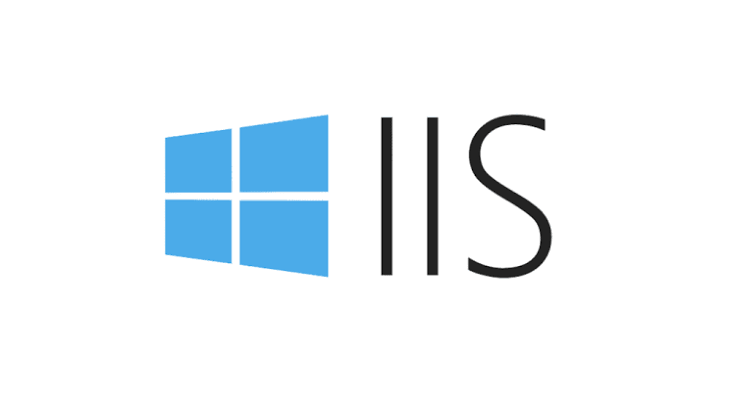

Conoce las herramientas utilizadas para desarrollar y publicar páginas web
Los servidores web son programas que permiten mostrar páginas y aplicaciones en una computadora o en Internet. Ayudan a que las personas puedan entrar a una página desde un navegador. Algunos servidores y herramientas conocidos son AMPPS, Tomcat e IIS. Cada uno tiene diferentes funciones y características.
Estas herramientas son muy utilizadas por estudiantes, programadores y empresas. Conocerlas permite entender cómo se desarrollan, prueban y publican los sitios web.
AMPPS es un programa que permite instalar varias herramientas para crear y probar páginas web. Es útil para estudiantes, programadores y personas que quieren aprender a desarrollar sitios web desde su propia computadora.
AMPPS reúne en un solo paquete varias tecnologías necesarias para el desarrollo web, lo que facilita el trabajo de quienes están aprendiendo o creando proyectos.
AMPPS sirve para preparar un ambiente de trabajo en el que se pueden crear páginas web y probar su funcionamiento. Por ejemplo, una persona puede desarrollar una página con PHP y conectarla a una base de datos para guardar información.
Sitio oficial: www.ampps.com |
Apache Tomcat es un servidor que permite ejecutar aplicaciones web creadas con Java. Se utiliza principalmente para páginas y programas que necesitan trabajar con esta tecnología. También ayuda a recibir solicitudes del navegador y enviar respuestas al usuario.
Es una de las herramientas más utilizadas cuando se desarrollan aplicaciones web con el lenguaje de programación Java.
Tomcat sirve para ejecutar aplicaciones web desarrolladas con Java. Por ejemplo, una empresa puede utilizar una aplicación web para registrar clientes, consultar datos o administrar información. Tomcat ayuda a que esa aplicación funcione y responda a las solicitudes de los usuarios.
Sitio oficial: tomcat.apache.org |
IIS significa Internet Information Services. Es un servidor web creado por Microsoft que funciona principalmente en sistemas Windows. Su trabajo es recibir las solicitudes de los navegadores y mostrar páginas web o permitir el funcionamiento de aplicaciones web.
Es la opción más utilizada cuando se trabaja con tecnologías de Microsoft como ASP.NET.
IIS sirve para publicar y administrar sitios web en equipos con Windows. Por ejemplo, una escuela puede tener una página para mostrar información sobre sus cursos. Si la página está alojada en un servidor con IIS, los usuarios pueden visitarla desde un navegador cuando el servidor está configurado correctamente y tiene conexión disponible.

Sitio oficial: www.iis.net |
Aunque los tres se relacionan con el desarrollo web, no hacen exactamente lo mismo. AMPPS reúne herramientas para crear y probar sitios web. Tomcat está enfocado en aplicaciones web de Java, mientras que IIS es un servidor web de Microsoft para publicar y administrar sitios y aplicaciones compatibles.
Los servidores web son importantes porque permiten que las personas puedan consultar información por medio de Internet o de una red local. Se utilizan en escuelas, empresas, tiendas, bancos y muchos otros lugares. También ayudan a ejecutar aplicaciones, compartir archivos y ofrecer servicios en línea.
Para elegir una herramienta, es importante saber qué tipo de página o aplicación se quiere crear, qué lenguaje de programación se utilizará y qué sistema operativo tiene el servidor.
AMPPS, Tomcat e IIS son herramientas útiles para trabajar con páginas y aplicaciones web. AMPPS facilita la preparación de un ambiente de desarrollo, Tomcat se utiliza principalmente con aplicaciones Java e IIS permite publicar sitios web en Windows. Conocer sus funciones ayuda a elegir la herramienta más adecuada para cada proyecto.